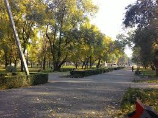
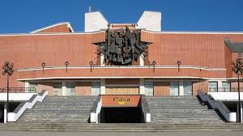

Достопримечательности Бельц
Центральный парк имени Андриеш

Центральный парк имени Андриеш — одно из самых популярных мест отдыха в Бельцах. Здесь находятся аллеи для прогулок, зелёные зоны и места для отдыха. Парк идеально подходит для прогулок с друзьями и семьёй, а также для проведения городских мероприятий и праздников.
Памятник танку Т-34

Памятник танку Т-34 в Бельцах посвящён событиям Великой Отечественной войны и героям, участвовавшим в освобождении города. Это одно из самых известных исторических мест города, куда приходят жители и гости, чтобы почтить память и узнать больше о прошлом региона.
Национальный театр имени Василе Александри

Национальный театр имени Василе Александри — культурный центр Бельц. Здесь проходят спектакли, концерты и различные культурные мероприятия. Театр играет важную роль в жизни города и привлекает как местных жителей, так и гостей.